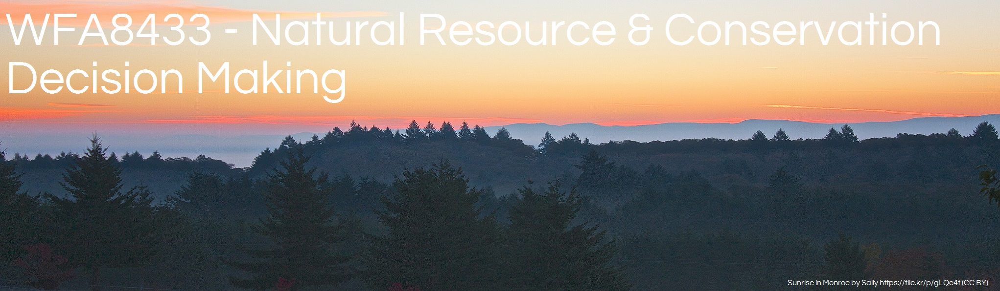
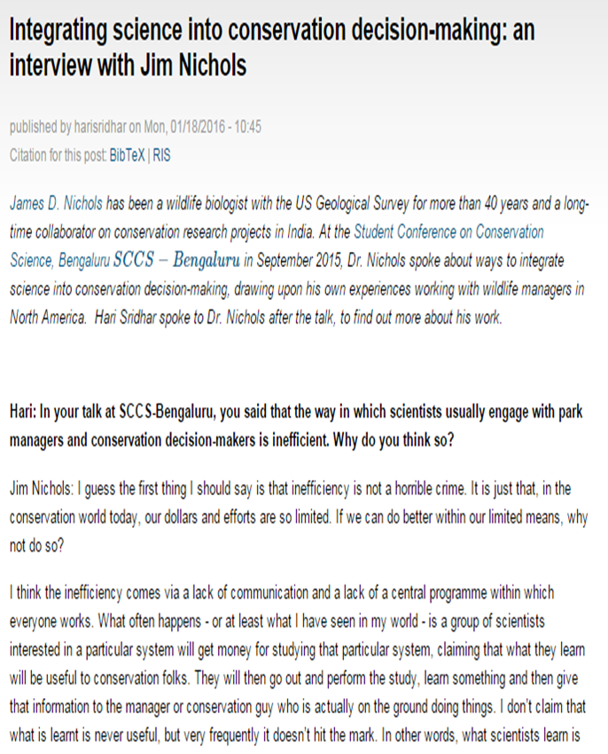
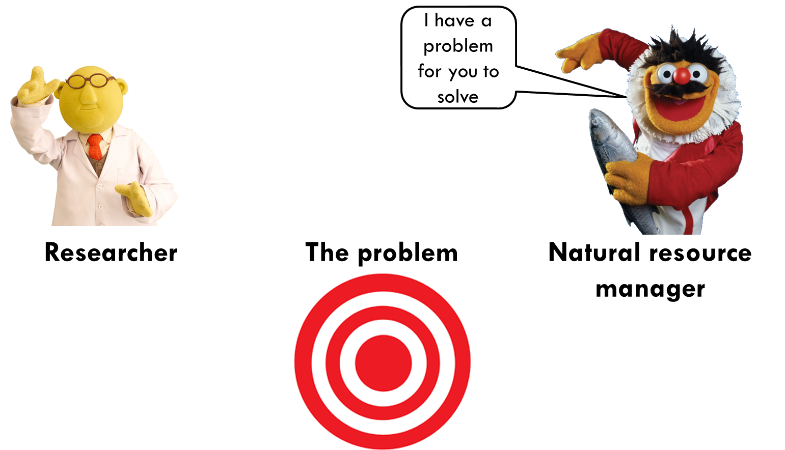
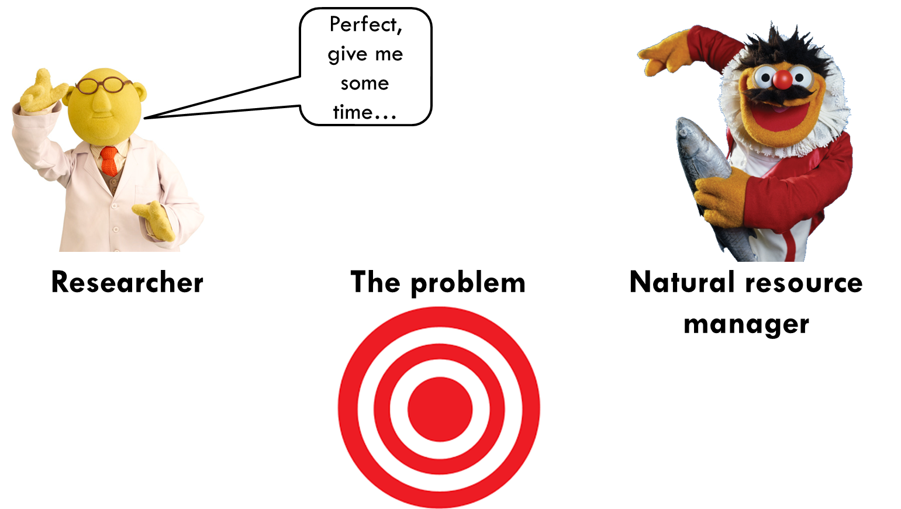
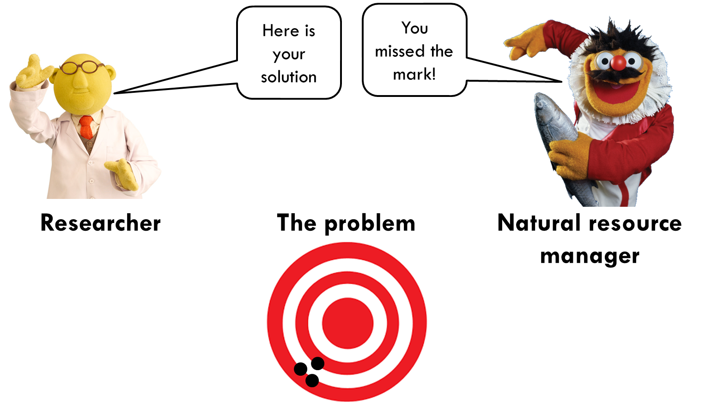
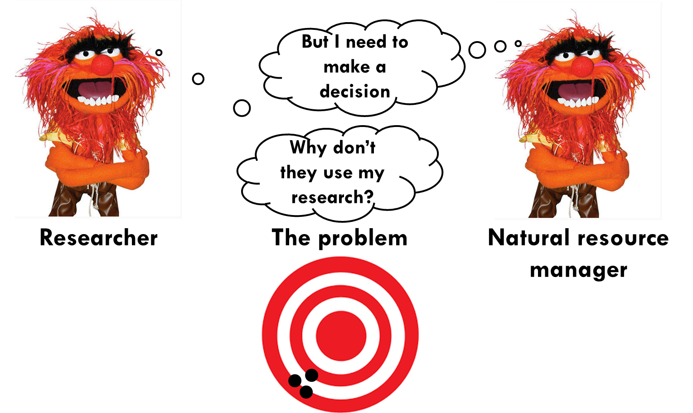
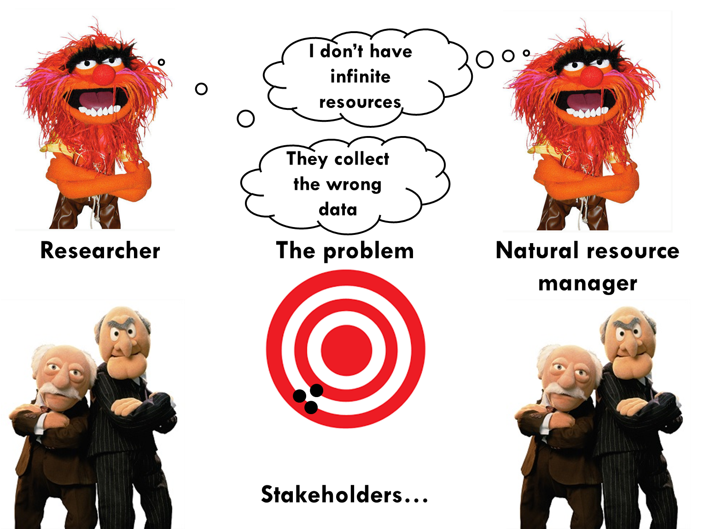
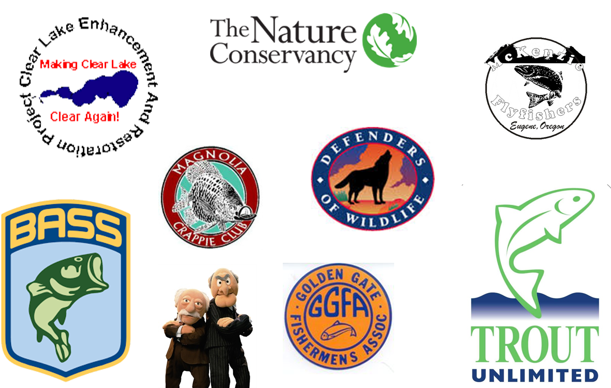

Mainstem temperature
psm-senstivity.png

Content in progress
Reading for next class: Hammond et al.: Chapters(s) 1-3


‘I think the inefficiency comes via a lack of communication and a lack of a central program within which everyone works.’ J. Nichols
    


Ideker.png defenders-of-wildlife-suite.png
Elewha.png
transparent-decisions.png
black-box.png
Mental models - Increase habitat & population will increase - Increase harvest & population will compensate
mental model image
assumptions.jpg
Fisheries biologist never complain about collecting too much data—Dr. Joe Bonneau
“sites were statistically different"
Make smarter decisions…
fish-school.png
How do we prioritize monitoring? How do we prioritize research? If something has to be cut what should it be? Will it impact decision making & management?
more-with-less.png
finite-resources.png
All MacGyver needed was a ball point pen and a paper clip
macgyver.jpg
ecology-books.jpg
statistics-books.jpg
decision-books.jpg
3-legged-stool.png
water-decisions.jpg
Problem Objectives Actions Consequences Tradeoffs proact.png
Models Decision trees & networks Decision models Sensitivity analysis Value of information
malheur.jpg
malheur-dynamics.png
carp-dynamics.png
coupled-carp-dynamics.png
Reduce connectivity Refuges Movement Reduce biomass fish-ladder.jpg dead-carp.jpg
Spatial representation Logistic population model Allows movement simulation-model.png
real-time-simulation.png
Clear objectives Identified alternatives Explicit assumptions System understanding Stakeholder involved in process
clear-lake.jpg
Visitors spend an average $43.36 million annually $1-3 million USD recreational fishery
State Legislation HF2782 (2006) 1.4 m Secchi disc transparency 50% of the time Water quality and public use benefits sustained at least 50 years.
water-quality.png
Pulsed intense removals over a short period Large removals Short duration Spring and fall
clear-lake-zebra-mussels.png
clear-lake-conceptual.jpg
clear-lake-food-web.jpg
clesm.png
equations.png
clesm-interface.png
decision-support-1.png
secchi-sims.png
yield.png
Finite resources-where to target restoration efforts Transparency Explicit assumptions Communication with stakeholders & managers
usa-willamette-basin.png
Anadromous species of conservation need -Threatened status 1999 - Anthropogenic modifications
willamette.png
willamette-dams.png
dead-nookie.jpg
Tagging Transporting Monitoring 30+million a year fish-tag.jpg transport-truck.jpg
psm-data-sources.png
psm-modules.png
Structured decision making approach Simulation model Decision model psm-decision-model.png
psm-optimal.png
psm-senstivity.png
psm-sensi-2.png
Finite resources-where to target restoration & monitoring Transparency Explicit assumptions Communication with stakeholders and managers Using monitoring to learn
pallid-mo-river.png
53+ Million annually recovery Active stakeholder group-MRRIC Multi attribute decisions Human considerations Recovery Terns & Plovers
pdsg-life-history.jpg
pdsg-stage-based-model.png
Build on existing work-stage based matrix type Collaborative Flexible Fits within Effects Analysis
tools.png
CEMS.png
linking-cems.png
pdsg-spatial-extent.png
pdsg-spatial-grain.png
cems-links.png
equation-ea.gif Can estimate parameters by capture-recapture (monitoring), field experiments, or expert elicitation
ea-learning.png
ea-learning-2.png
ea-learning-3.png
monitoring.png
monitoring-sims.png
ipm.png
Finite resources-where to target restoration & monitoring Transparency Explicit assumptions Communication with stakeholders and managers Using monitoring & science to learn
3 legged stool